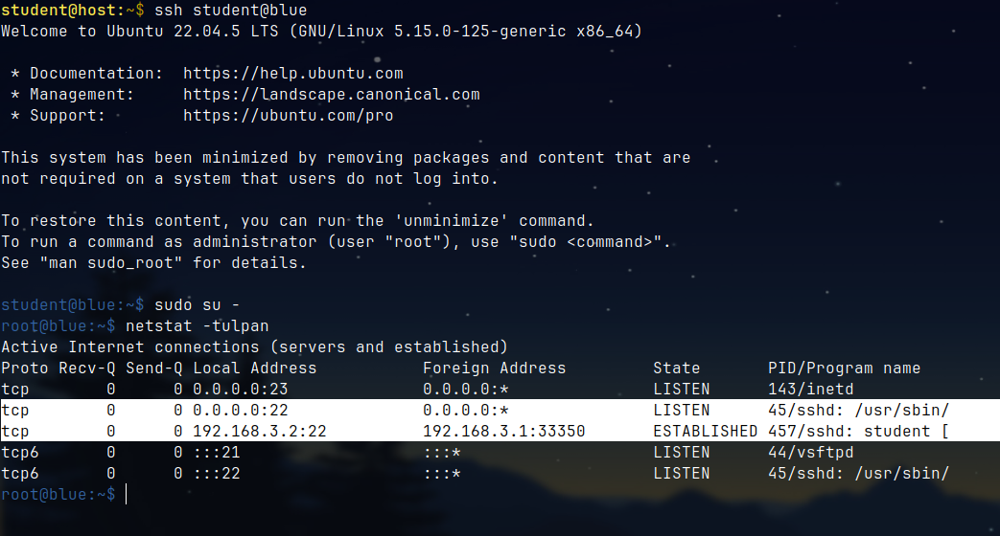
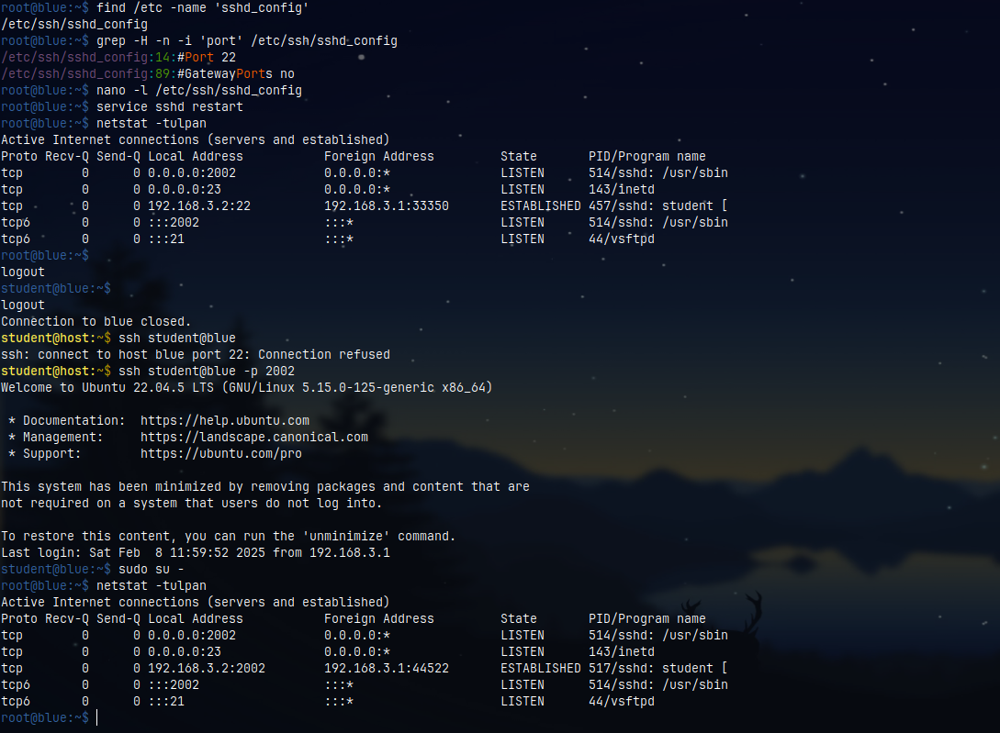

How to change the port SSH runs on
By default, SSH runs on port 22, but we can change that.
Edit
/etc/ssh/sshd_configfile.
Commands
$ sudo find /etc/ -name 'sshd_config'
/etc/ssh/sshd_config
Open that file and find the line #Port 22.
Then uncomment it and replace 22 with a new port number.
nano -l /etc/ssh/sshd_config # or vim
Line
#Port 22->Port <number>
Now, restart the ssh process:
For Debian/Ubuntu:
service sshd restart
You can verify that SSH runs on a different port by typing this netstat commadn:
netstat -tulpan
Notice that the port 22 is no longer opened and default SSH connections are blocked (refused).
In order to SSH into the remote station, we need to specify the selected port:
ssh <user>@<IP/hostname> -p <port>
Make sure that no firewall rules are applied against the selected port for
SSH-ing into the remote station.
Also see
 